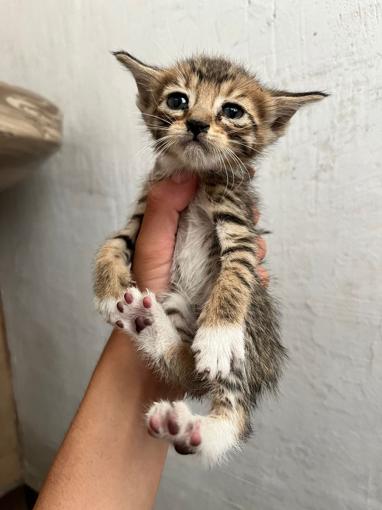

Metodos Numéricos II
Alguien que haya tomado métodos numéricos I con el profe curiel y que tenga sus apuntes ?
Alguien que haya tomado métodos numéricos I con el profe curiel y que tenga sus apuntes ?
Disponible de 7 a 13 hrs.


Para este día del niño, casi todos conocemos personas que les gusta el fútbol y tienen un ídolo (pareja, amigos, hermanos, papás) o incluso nosotros somos esa persona ¿Quieres dar un regalo perfecto que demuestre cuánto te importa? Basta con que alguna vez hayas escuchado a ese ser querido mencionar que su ídolo es algún jugador y podrás darle un recuerdo que nunca olvidará Con un aspecto rústico y minimalista.


Hace unos días publiqué a unos gatitos que necesitaban un hogar, lamentablemente yo no puedo quedármelos, algunas personas se interesaron, incluso me dijeron que ya era un hecho, pero después ya no me contestaron, incluso una de ellas ví que comentó otro post de otros michis en adopción diciendo que ella lo quería, lo cual no me importa, mientras de verdad los michitos tengan hogar, pero me puso super triste que esa misma persona ya había quedado conmigo, en lugar de decirme que ya no estaba interesada. Este bebé se quedó solito, y nadie lo quiso u.u Si alguien de verdad está interesado, se los puedo entregar en la FES, mañana mismo. Por favor, solo personas que de verdad esten dispuestas a ser responsables y darle mucho amor al michito. Gracias.

Título del puesto: Líder de Inteligencia de negocios Resumen del puesto: Como Líder de Inteligencia de Datos, serás responsable de dirigir y supervisar las operaciones del equipo de inteligencia de datos de la empresa. Tu objetivo principal será impulsar la utilización efectiva de los datos para mejorar la toma de decisiones estratégicas y proporcionar información valiosa a los diferentes departamentos de la organización. Serás responsable de supervisar la recopilación, el análisis y la presentación de los datos, así como de garantizar la integridad y la calidad de los mismos. Trabajarás en estrecha colaboración con otros líderes y equipos, y reportarás directamente a la alta dirección. Responsabilidades: 1. Liderar y supervisar el equipo de inteligencia de datos en todas las fases del proceso, incluida la recopilación, el análisis, la interpretación y la presentación de datos. 2. Definir y establecer las estrategias y los objetivos del equipo de inteligencia de datos, alineados con los objetivos generales de la empresa. 3. Colaborar con los diferentes departamentos y líderes de la organización para comprender las necesidades de datos y proporcionar soluciones efectivas. 4. Garantizar la calidad y la integridad de los datos recopilados, asegurando la aplicación de mejores prácticas en términos de gobernanza de datos y cumplimiento normativo. 5. Desarrollar e implementar modelos analíticos y algoritmos avanzados para identificar patrones, tendencias y oportunidades de negocio. 6. Presentar informes y análisis de datos de manera clara y efectiva a los líderes y equipos relevantes, proporcionando información y recomendaciones accionables. 7. Mantenerse actualizado sobre las últimas tendencias y avances en el campo de la inteligencia de datos y proponer iniciativas innovadoras para mejorar los procesos existentes. 8. Gestionar y supervisar el presupuesto asignado al equipo de inteligencia de datos, asegurando un uso eficiente de los recursos. Requisitos: 1. Título universitario en ciencias de la computación, estadística, matemáticas u otro campo relacionado. Se valorará la posesión de un título de posgrado. 2. Experiencia comprobada en roles relacionados con la inteligencia de datos, incluyendo al menos 3 años en un puesto de liderazgo. 3. Conocimientos profundos en técnicas de análisis de datos, minería de datos, estadísticas y visualización de datos. 4. Experiencia en el uso de herramientas y tecnologías relacionadas con la inteligencia de datos, como bases de datos SQL/NoSQL, lenguajes de programación (por ejemplo, Python, R), herramientas de visualización (por ejemplo, Tableau, Power BI) y técnicas de aprendizaje automático. 5. Fuertes habilidades analíticas y capacidad para convertir datos en información accionable y recomendaciones estratégicas. 6. Excelentes habilidades de liderazgo, con capacidad para motivar y guiar a un equipo multidisciplinario. 7. Fuertes habilidades de comunicación verbal y escrita, con capacidad para presentar información compleja de manera clara y comprensible para audiencias no técnicas. 8. Orientación a resultados y capacidad para gestionar proyectos de manera efectiva Si cumples con el perfil comparte tu CV al correo *nallely.ramirez@redaliat.mx*
El dia 26 y 27 de Abril se realizara un mantenimiento a los equipos de pc-puma por lo que su prestamo sera limitado.
Tomen sus precauciones.